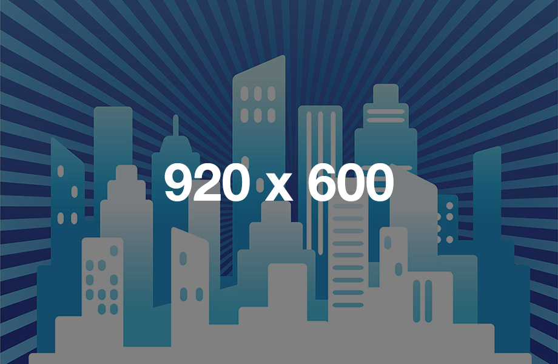

Copyright © Ye Joo Park 2013
Using the template
Folders and files in the templates are explained below.
<!-- each section is marked by #section-[name] --> <div id="section-about"> content goes here </div><!-- // #section-about -->
To make life a little bit easier, Yahoo YUI's reset.css is directly linked in the <head> section.
// each section in the css file is numbered
/*----------------------------------
3.4 About
----------------------------------*/
#section-about {
background: #eee;
font: normal 16px/27px 'PT Serif', Georgia, serif;
padding: 80px 0;
}
The image used in the examples have a common width of 920px, and a height between 200~250px. Make sure to save your logo with a file format that supports a transparent background (.png). Look for images/logo_eventcamp.png.
You can use the AJAX contact form functionality if your hosting (or server) supports PHP. It's very likely that your hosting will support PHP. If this is the case, open up includes/include.emailSender.php and replace 'your@email.com' with your own e-mail address, and 'Contact form submission' with your own e-mail title:
$contactformRecipient = 'your@email.com';
$contactformTitle = 'Contact form submission';
Changing the color of the template is EXTREMELEY EASY. It only takes one search and replace all in the main css file. Open up the css/style.css file. Look for .font-color-primary. The hex code in assigned is the color we want to search for. Search and replace with your own color.
As an example, the hex code in the red template is #dd3333. Search #dd3333 and replace with #009900 to change the template color into green.
This template uses a responsive 16-column grid system.
The grid system is based on Dave Gamache's' "Skeleton" boilerplate.
I've adjusted the column widths and margins on default viewport to give more spacing (margins).
Look below for an example.
<!-- make sure to wrap the grids in .container --> <div class="container"> <div class="four columns"> This code generates a four-column space. </div><!-- // .four --> <div class="twelve columns"> And here goes the twelve columns! </div><!-- // .twelve --> <!-- to move onto a different row, simply clear the blocks using <div class="clear"></div> --> <div class="clear"></div> <div class="eight columns"> eight columns, yay! </div><!-- // .eight --> <div class="eight columns"> another eight </div><!-- // .eight --> <div class="clear"></div> </div><!-- // .container -->
This code will result in a grid structure similar to below.
Look below for more examples.
If you're familiar with the traditional grid systems, it's very likely that you already know what "pushing" the grid does.
In simple terms, it can move a column and give extra spacing.
To push the grid, add an extra class of .offset-by-[number of columns to offset].
<div class="container"> <div class="five columns"> .five .columns </div><!-- // .five --> <div class="four columns offset-by-one"> .four .columns .offset-by-one </div><!-- // .four --> <div class="three columns"> .three .columns </div><!-- // .three --> <div class="two columns offset-by-one"> .two .columns .offset-by-one </div><!-- // .two --> <div class="clear"></div> </div><!-- // .container -->
This code will result in a grid structure similar to below.
All images in the template is set to max-width: 100% to scale down accordingly in mobile viewports. Resize the browser width to see how the image sizes automatically change.

When making websites, you'll occasionally want to apply alpha backgrounds. Maybe for better designs, or just for the sake of being cool.
With Eventcamp, it's extremeley easy to do this.
Just add an extra class .bg_alpha_[multiple of 5] for darker ones, and .bg_alpha_[multiple of 5]_white for brighter ones.
<div class="bg_alpha30.png">Black alpha background with opacity 0.3</div>
<div class="bg_alpha40_white.png">White alpha background with opacity 0.4</div>
.bg_alpha5
.bg_alpha10
.bg_alpha15
.bg_alpha20
.bg_alpha25
.bg_alpha30
.bg_alpha35
.bg_alpha40
.bg_alpha45
.bg_alpha50
.bg_alpha55
.bg_alpha60
.bg_alpha65
.bg_alpha70
.bg_alpha75
.bg_alpha80
.bg_alpha85
.bg_alpha90
.bg_alpha95
.bg_alpha5_white
.bg_alpha10_white
.bg_alpha15_white
.bg_alpha20_white
.bg_alpha25_white
.bg_alpha30_white
.bg_alpha35_white
.bg_alpha40_white
.bg_alpha45_white
.bg_alpha50_white
.bg_alpha55_white
.bg_alpha60_white
.bg_alpha65_white
.bg_alpha70_white
.bg_alpha75_white
.bg_alpha80_white
.bg_alpha85_white
.bg_alpha90_white
.bg_alpha95_white
Major thanks to these awesome people/organizations
If you run into any issues, please e-mail me at subwaymatch@gmail.com.
I am generally quick in responding to e-mails, and I would be glad to resolve any problems.
Copyright © Ye Joo Park 2013